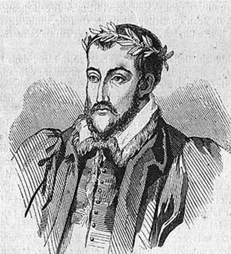
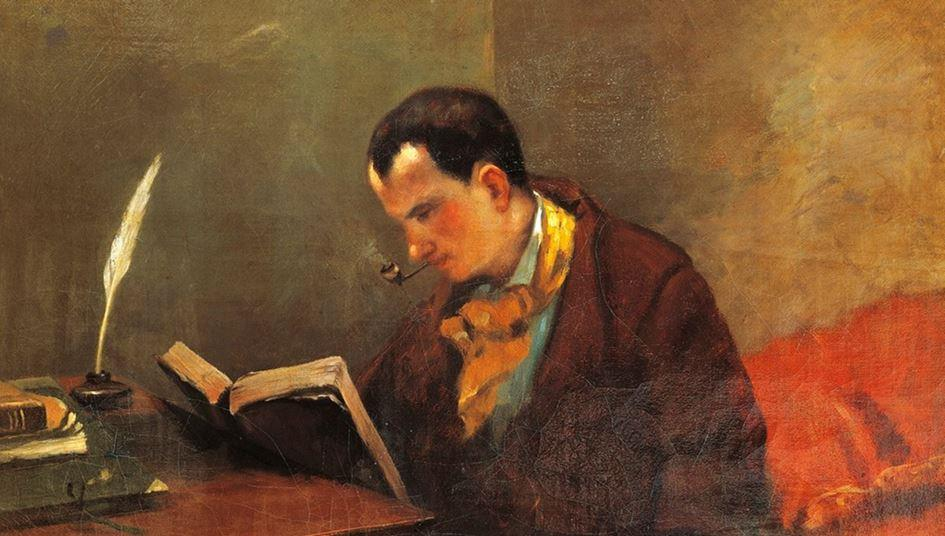
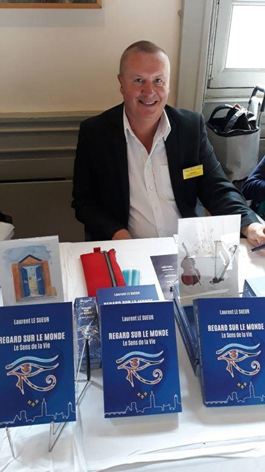
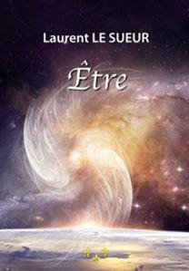
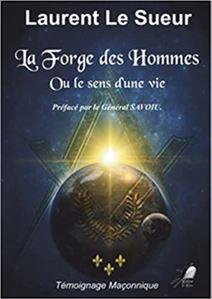

La langue française est une invitation au voyage dans l’univers sans frontière de la pensée. Elle offre à l’esprit humain une infinité de manières de se représenter le monde.
Belle comme la rose rouge, elle offre ses couleurs aux hommes amoureux de sa beauté. Elle murmure ses rêves d’éternité dans les songes, et par une belle journée printanière, elle voit naitre dans son écriture les reflets dorés de ses expressions le plus délicates.
Coucher sur une feuille blanche, elle sourit, elle chante la Liberté aux oreilles de son dévoué serviteur.
Que dit-elle d’autre ? Rien, elle chuchote à ses discrets amants qu’elle transmet la culture du beau pour que nos âmes voyagent encore et toujours dans ses bras, ceux d’une mère attentionnée qui aime ses enfants. Elle offre à penser la langue du Lys.
 Joachim du Bellay (1522 - 1560)Jadis glorifiée, elle aimait partager la poésie de ses mots, ceux qui soignent les maux. Certains la voient comme la langue réservée à une élite aristocratique, pauvres âmes perdues, elle est l’élite des cœurs, de tous les cœurs.
Son expression a fait grandir la Nation par ce que nous désignons : le don de soi. Car elle donne sans vergogne, sans rien attendre d’autre que l’amour. Mais cette denrée est devenue si rare, que seule la crasse a étouffé les becs des gallinacées qui gloussent leur bêtise à longueur de journée dans les temples de la surconsommation.
Voyager dans les pensées et dans les paysages que le lecteur crée au fil de sa transhumance, donne la possibilité d’aller sur d’autres rivages, mais le mystère reste entier tant que le fleuve n’est pas franchi.
Soyez attentif à votre mère, elle vous suggère plus que de simples mots lors des pleines lunes. Elle donne à l’enfant des sons tendres, remplis d’amour, de sentiments si intenses que l’imagination humaine peine à trouver les mots.
Comment faire petit homme ? Écoute ton cœur et plonge tes yeux dans le royaume de la nuit. Ici, toutes les étoiles scintillent et dansent dans l’azur pour que tes larmes de joie donnent l’encre à ta plume enchantée. Ici reposent tous les trésors d’imagination, ils attendent avec sagesse que tu moissonnes les graines de la littérature.
D’abord, tu griffonneras sur ton vieux grimoire, des mots, des impressions, des couleurs, des senteurs, des sentiments. Puis les rêveries minérales et florales de notre bien-aimé Claude Debussy emporteront tes pensées dans le bal joyeux des notes musicales de ce génie.

Charles Baudelaire
Va de par le monde, va fleurir le cœur de ces enfants qui rêvent de France sous un arbre à palabres. Va découvrir les pensées de tous ces chérubins qui rêvent d’une simple feuille jaunie et d’un crayon de bois. Va, vie, et devient l’aventurier de cette immense bibliothèque qui se trouve cachée dans l’âme de la création.
N’oublie pas, en 1789, les ignorants ont brulé la mémoire des hommes. Que la leçon soit faite !
Honnis soit qui mal y pense ! Défends ta langue comme tu défendrais ta propre vie. Porte la poésie de ses chants pour donner un peu de Lumière dans l’obscurité du monde, ce monde qui a tant besoin de la connaissance et de la sagesse.
La langue du Lys est un phare pour les belles âmes, mais ces derniers doivent la porter au royaume des aveugles. Une langue complexe et belle donne à penser sur la condition humaine.
Amis des lettres, prenons la route ensemble sur le chemin de l’imagination, allons à la rencontre de notre singularité, celle d’un être humain.
L. LS.
Laurent Le Sueur est né en 1967 à Rouen en Normandie. Après des études en électronique et une école de commerce, son parcours a été riche d’un point de vue technique et par de belles rencontres dans un environnement toujours multiculturel. Il est un homme de terrain expérimenté dans la prévention des risques industriels. Mais ce qu’il aime par-dessus tout c’est se retrouver dans la Nature et observer les comportements de ses contemporains. Le goût pour l’écriture est venu par son implication dans des associations naturalistes. Un premier ouvrage en 2005 puis un second en 2007 virent le jour. Après une longue pose, il a désormais repris la plume pour partager ses réflexions et ses inspirations, explorer la nature humaine et nous livrer ses pensées à travers des essais, des romans et des enseignements qu’il a appris de la vie.
Observateur, il décortique, il analyse, sa curiosité lui fait explorer des domaines diamétralement opposés, c’est ce qui fait son caractère atypique. Son goût pour l’espièglerie lui donne le courage de prendre des chemins sinueux et une position engagée et assumée pour susciter le réveil des consciences et de la réflexion afin de défendre les valeurs ancestrales de son pays qu’il aime appeler notre belle France. Son cheval de bataille : l’injustice et la soumission des hommes à l’asservissement, la recherche de la justesse dans les actes des hommes, une recherche du sens de la vie.
Partager cette page